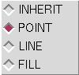
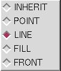
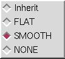
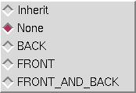

Current object:
The current-object can be selected in the GUI by right-clicking on its name in the object listbox. Another way to select an geometry (i.e. an object) is to right click on its geometry. The name of the current object is highlighted in the GUI. The viewer instance also has a member called currentObject pointing to that object. This handle can be used to set the current-object programmatically. To select the root object, click on the background.Current camera:
This concept is only meaningful when multiple cameras are used, else the default camera is always the current one. The current-camera is the one that has a red outline. To select a camera to be the current one, right-click on its background. NOTE: right-clicking on the background of the current camera means something different: it means make the root object the current object.
Current clipping plane:
The Viewer supports arbitrary clipping planes. Their number depends on your OpenGL implementation. Clipping planes are activated on a per-object basis. They can be inherited by children, i.e. turning on the first clipping plane while Object A is the current object will activate this clipping plane for Object A only. The current clipping plane can be selected either using the clipping plane property panel in the GUI or by right-clicking on the geometry representing a clipping plane in a camera (if it is visible). The current clipping plane can be determined by looking at the clipping plane property panel or by examining the Viewer's member called currentClip that points to that clipping plane.
Current light:
An instance of a viewer contains a light-model object that provides an interface to the OpenGL Lighting Model. It also maintains a list of independent light source objects. Currently only directional light-sources are supported. The current-light can be selected either using the light property panel in the GUI or by right-clicking on the geometry representing a light source (if it is visible). The current light can be determined by looking at the light property panel or by examining the Viewer's member called currentLight that points to that light source object.
Reset:
This button resets the transformation of the current object. Its rotation becomes identity, its translation the vector (0.,0.,0.) and its scale the vector (1.,1.,1.). Nothing changes for parent nodes of children, they all keep their own transformations untouched.Normalize:
I would advise using this only on the root object. However, applied to another currentObject, this is what should happen. This function translates and scales the bounding box of the geometries in the sub tree rooted at the current object in such a way that the bounding box roughly fills the Camera. When applied to root, this gives you a nice view of the whole scene. When applied to another object in the scene, its bounding box should fill the camera.Center:
This button sets the center of rotation of the current object to the center of gravity of all the vertices found in that geometry and all its children. For instance, when applied to the root it sets the center of rotation of the "world" to be the center of gravity of the scene.
| Middle-button | rotation |
| Right-button | XY-translation |
| Shift + Middle-button | scale |
| Shift + Right-button | Z-translation |
Because of the perspective, the Z-translation looks like a scaling operation,
but it is not. You can tell
the difference by doing a Z-translation away from you. You will see
the object fade in the fog ...!
You can set the rotation center of the current object by picking on
any vertex in the scene while
holding down the Shift key.
| Shift + Left-button | set rotation center to picked vertex |
The drawing mode menu for front-facing polygons lets you choose inherit,
in which case the polygons are drawn in the same mode as their parent,
or as points, lines or with a filled representation. There may also
be an outline mode which appears only if your OpenGL provides the OffsetPolygon
extension.

The drawing mode menu for back-facing polygons adds the possibility
of the back polygons being represented with the same mode selected for
the front.

The shading mode menu selections are for the current object to be shaded
with an inherited shading mode, with flat shading which shades the entire
polygon with one color, with smooth shading which uses gourot shading or
not at all.

The culling mode menu selections are to select which polygons to be
culled in the same mode as in the current object's parent, to do no culling,
to cull the back-facing polygons, to cull the front-facing polygons or
to cull all of them (which makes the object disappear!)

(1) The bounding box of the current object
by default is not shown. You can use this menu to show the bounding
box alone or with the current object. This bounding box has the special
property that it remains orthogonal to the axes of the viewer even if the
object it bounds is rotated. If the current object is root, the bounding
box encompasses all of the objects in the scene.
(2) In auto spin mode the object continues
its motion after the mouse button has been released. This motion
continues until the next mouse button click.
(3) Scene antialiasing uses the standard
OpenGl scene jittering to achieve antialiasing. You can select how
much jittering is done from these values: 0, 2, 3, 4, 8, 15, 24 and 66.
(4) This displays the color editor which
allows you to modify the background color of the current camera.
(5) The line represents the z-axis with
the Viewer at the left and infinity at the right. The triangles may be
dragged any where in this range. The left blue triangle on the top of the
line sets the position of the near clipping plane while the top right blue
triangle sets the position of the far clipping plane. By changing
the positions of these two triangles, you can display selected sections
along the z-axis. The bottom left triangle represents the plane along
the z-axis where fog starts and the bottom right triangle the plane for
100% fog. Linear fog is implemented between these two.
(1) The default OpenGL Lighting Model (see
OpenGL Programming Guide ,M. Woo, J. Neider and T. Davis, Reading,
MA: Addison-Wesley Developers Press, 1997. pages 193-195) is based
on three concepts: global ambient light, whether the viewpoint position
is local to the scene or infinite distance away and whether lighting calculations
should be done differently for front and back faces of objects. The
default ambient light can be changed with the color editor. The location
of the viewpoint affects how the highlights on objects are calculated.
The Viewer uses the infinite distance viewpoint by default but this
can be changed to use a local viewer. The Viewer uses front face lighting
calculations as the default. It is slower to calculate lighting for
both sides of the polygons, but this may be useful in special cases.
(2) These buttons allow the selection
of the current light. Currently only directional light sources are
supported. The bottom three buttons always apply to the currently
selected light. The Light On button toggles the light on and off.
Show Lights button toggles whether a line is drawn in the Camera showing
the direction of the current light. Edit Light Color displays a color editor
which can be used to change the color of the current light.